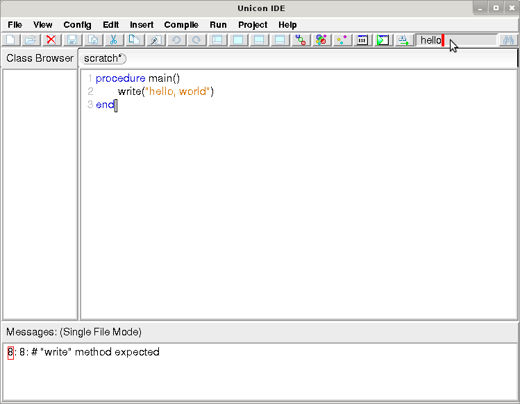
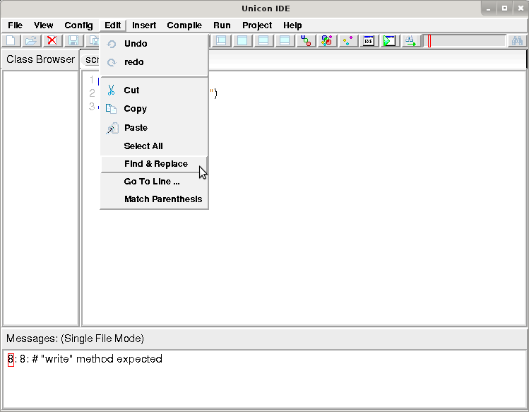

|
http://unicon.org/utr/utr12.html Department of Computer Science University of Idaho Moscow, ID 83844 |
Clinton L. Jeffery, Hani Bani-Salameh,
Sean Harris, Ben Jeffery, Shea Newton, and Serendel Macphereson
May 22, 2015
Unicon Technical Report #12a
Abstract
|
http://unicon.org/utr/utr12.html Department of Computer Science University of Idaho Moscow, ID 83844 |
Even Ui's very "simple" goals are complicated by the fact that the tool needs to run on any machine where Unicon runs with graphics facilities enabled. At this time, this primarily consists of UNIX-based systems that run the X Window System, such as Linux, Solaris, Mac OS X, and Microsoft Windows-based machines. There is a practical minimal screen resolution limit, probably around 800x600 for this tool.
Ui is a product of the Unicon Project and is a standard part of the
Unicon programming language distribution, developed under the GPL, hosted on
Source Forge, and downloaded from http://unicon.org.
If you are not already familiar with Unicon you may wish to consult
other technical reports from that site, such as UTR #7[2], along with
this one.
Windows Unicon and the Ui environment are based on
the volunteer work of many people; final responsibility for this release
rests with Clinton Jeffery of University of Idaho.
Send requests, and bug reports to
jeffery@cs.uidaho.edu.
2. Editing, Compiling, and Executing Programs
Double-click the Windows Unicon icon to launch Ui, the Unicon IDE
(integrated development environment). Ui is written in Unicon and
allows you to edit, compile, and execute programs from a graphic user
interface. Ui is designed to run the same on UNIX and Linux as it does on
Windows. Ui's documentation (this file) may be accessed on-line through
its Help menu.
To start, you must select the name of a file to edit, in following dialog:
You can easily select an existing Unicon source file, or name a new one.
If you click "Open" without choosing a name, you will be given the default
name of "noname.icn". Unicon source files generally must use the extension
.icn and should be plain text files without line numbers or
other extraneous information. Editing your program occurs within the main
Ui window, which might look like this:

The top area shows program source code, while the bottom portion shows messages such as compiler errors. You can change the font and the number of lines used to show messages from the Edit menu.
When you are done editing your program, you can save it, compile it, or just "make" (save, compile and link an executable) and run your program with menu options. The Arguments command in the Run... menu let's you specify any command-line arguments the program should be given when it is executed.
|  |  |
The search text-field is bracketed by two buttons: a find button on the far right edge which initiates a search, and a direction toggle button to the left of the search text-field that changes the direction of the search.
For more substantial search tasks, the Find & Replace dialog accessed from the Edit menu supports case-insensitive, backwards, and regular expression searching.

Run-time errors also result in a message for which the source line is
highlighted. The message for a run-time error includes Unicon's standard
traceback of procedures from main() to the procedure in which
the error occurred. When the error messages get long, you can either
increase the number of lines for the message window (as was done here) or
scroll through the message window's entire text using the scrollbar.
Ui works on programs comprised of one or more source files. A project is Ui's abstraction of a program, consisting of the program name, working directory in which it is built, and set of source files and their dependencies on other files. By default, Ui takes it that it is working on single file project consisting of the current source file. If you are working on a single-file project, and you open a new .icn source file, Ui switches the editor and compile and link commands to work on this new program.
Ui project files are Makefiles, given the extension .Makefile. The format of Makefiles is described in documentation for one of the widely used "make" programs such as GNU make (see for example www.gnu.org/software/make/). You can write your makefiles by hand, but in order for Ui to keep things straight, you had better stick closely to the format that it generates for you when you create a New Project. The dialog for creating a project let's you specify the set of source files and their dependencies for a Unicon program.
When you open a project file, Ui goes into "project mode", and adds the source files and their dependencies to your Class Browser allowing you to switch easily between files relevant to your project. If you subsequently open a source file not in the project, Ui asks if you want to add that source file to the project, or edit that file as a separate program. In general, project files allow you to "make" large projects efficiently. Underneath the covers, Ui invokes the other Unicon program executables to do the work of compiling and running programs, described below.
When Ui "makes" a program executable, it recompiles those modules listed in the project file whose modified time is newer than their corresponding object files. Ui does not present consider link declarations embedded in source files, which generally are used for library modules; recompilation will not be triggered by such dependencies. When you use Ui, you should generally use link directives for library files (such as Unicon Program Library modules), and use explicit project file entries for all of your own source files. Files detailed in the .Makefile must not also be referenced in a link statement; linking the same module twice causes link errors. For projects, the executable that is produced and the project itself are named after the first program in the project file unless otherwise specified.
Additionally, if it is not a word, or it is not a known function, a popup menu briefly decribes the right-click functionality.
Currently this feature is limited to exact name variables. An instance of a class or function name would not be recognized as a known function e.g.
x := foo()Future work may include expanding the range of known functions to include these additional instances.
Other possible additions may be an extension of the tooltip class to include a subclass for right-click events which would be utilized here in place of the descriptive popup menu. This would allow for a more detailed description.
Having the word under the cursor defined allows for the possible addition of a highlighting feature or a "find all usage" feature.